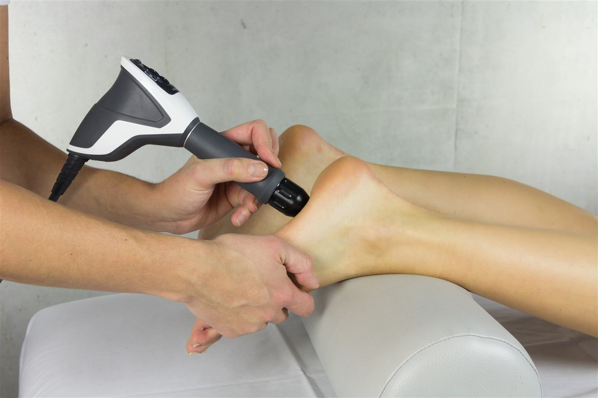

Therapiezentrum Wallererstraße 12
Ärztliche Leistungen und physikalische Therapie unter einem Dach.
Moderne Gerätetherapie
Im Therapiezentrum kommen unter anderem Stoßwellentherapie und Laserneedle-Behandlung zum Einsatz – schonende, nicht-invasive Verfahren zur Schmerzlinderung und Geweberegeneration.

Ärztliche Leistungen
Akupunktur (Diplom der ÖÄK)
Traditionelle chinesische Therapiemethode, bei der dünnen Nadeln an spezifischen Punkten des Körpers platziert werden, um das Qi zu regulieren, Schmerzen zu lindern und das allgemeine Wohlbefinden zu fördern.
Neuraltherapie (Diplom der ÖÄK)
Nebenwirkungsfreie Schmerztherapie (kein Kortison). Lokalanästhetika werden in spezifische Körperstellen injiziert, um Schmerzen zu lindern und gestörte Körperfunktionen zu normalisieren.
Sportorthopädie
Diagnose, Behandlung und Prävention von Verletzungen und Erkrankungen des Bewegungsapparats bei Sportlerinnen und Sportlern.
Manuelle Medizin (Diplom der ÖÄK)
Durch gezielte Handgriffe und Mobilisationstechniken werden Funktionsstörungen des Bewegungsapparats diagnostiziert und behandelt.
Infiltration (Gelenke, Wirbelsäule, Sehnen)
Medikamente (Cortison/Lokalanästhesie) werden direkt in oder um ein betroffenes Gelenk oder Gewebe injiziert, um Schmerzen zu lindern und Entzündungen zu reduzieren.
ACP-Therapie – Eigenblutbehandlung
Die ACP-Therapie (Autologes Conditioniertes Plasma) fördert die Heilung und reduziert Entzündungen durch Injektion von konzentriertem Eigenblutplasma in verletztes Gewebe. Nach Entnahme und Zentrifugation von etwa 15 ml Blut wird die wachstumsfaktorreiche Phase ohne weitere Zusätze zur Regeneration von Knorpel oder Gewebe injiziert. Typischerweise werden drei bis fünf Injektionen empfohlen.
- Arthrosen der großen Gelenke
- Sportverletzungen wie Muskel- und Sehnenverletzungen
- Sehnenansatzprobleme, z. B. Tennisellenbogen
Knorpelaufbautherapie (Hyaluronsäure)
Verbessert die Gelenkfunktion, verringert Entzündungen und lindert Schmerzen bei Arthrose.
Ultraschall-/CT-gezielte Infiltration
Präzise Platzierung von Injektionen zur Schmerzlinderung oder Entzündungshemmung unter Bildgebungskontrolle, in Kooperation mit Radiologen.
Triggerpunkttherapie
Schmerzhafte und verspannte Muskelknoten (Triggerpunkte) werden durch gezielte Druckausübung (manuell/Stoßwelle), Injektionen oder Akupunktur gelockert.
Stoßwellentherapie (z. B. Kalkschulter, Fersensporn)
Hochenergetische akustische Wellen werden gezielt auf Körperstellen gerichtet, um Schmerzen zu lindern und die Heilung von Sehnen-, Knochen- oder Muskelgewebeschäden zu fördern. Besonders effektiv bei Kalkschulter, Tennisellbogen, Muskelverletzungen, Sehnenansatzveränderungen, Achillessehnenschmerzen und Patellaspitzensyndrom.
Professionelle Einlagentherapie
Individuell angepasste Einlagen korrigieren Fußfehlstellungen, lindern Schmerzen und verbessern die Funktion des Bewegungsapparats.
Orthopädietechnische Schuhversorgung
Anpassung spezieller Schuhe für individuelle orthopädische Bedürfnisse zur Verbesserung von Komfort, Schmerzlinderung und Bewegungsfreiheit.
Privatgutachten und ärztliche Atteste
Medizinische Dokumente zur Klärung von medizinischen Fragen, zur Beurteilung der Arbeitsfähigkeit oder zur Unterstützung rechtlicher Angelegenheiten.
Physikalische Therapie
Schwellstrom
Niederfrequenter elektrischer Strom zur Schmerzlinderung und Förderung der Durchblutung und Rehabilitation.
Iontophorese
Elektrischer Strom transportiert Medikamente durch die Haut, um lokale Entzündungen zu reduzieren oder Schmerzen zu lindern.
Extensionsbehandlung Wirbelsäule
Zugkräfte vergrößern die Zwischenwirbelräume und reduzieren den Druck auf Nervenwurzeln und Bandscheiben.
Lasertherapie: Hämolaser
Nicht-invasive Low-Level-Lasertherapie zur Schmerzlinderung, Entzündungsreduktion und Geweberegeneration.
Lasertherapie: Laser-Needle-Behandlung
Schonendes Heilverfahren mit schwachen Laserstrahlen zur Schmerzlinderung, Entzündungshemmung und beschleunigten Geweberegeneration – ohne Eingriff in den Körper.
Moorpackungen
Warme oder kalte Moorpackungen lindern Schmerzen, fördern die Durchblutung und lockern Muskelverspannungen.
Physiotherapie/Heilmassage mit ausgewählten Partnern
In Zusammenarbeit mit spezialisierten Fachkräften und Einrichtungen für eine umfassende, qualitativ hochwertige Versorgung.
Physiotherapie Valentin Hofer, BSc
Wallerer-Straße 10, 4600 Wels (Eingang links neben KTM-Braumandl, im Gebäude der HNO-Praxis Dr. Hofstätter)
physiotherapie.hofer@gmx.at · +43 660 8671685 · www.hv-physio.at